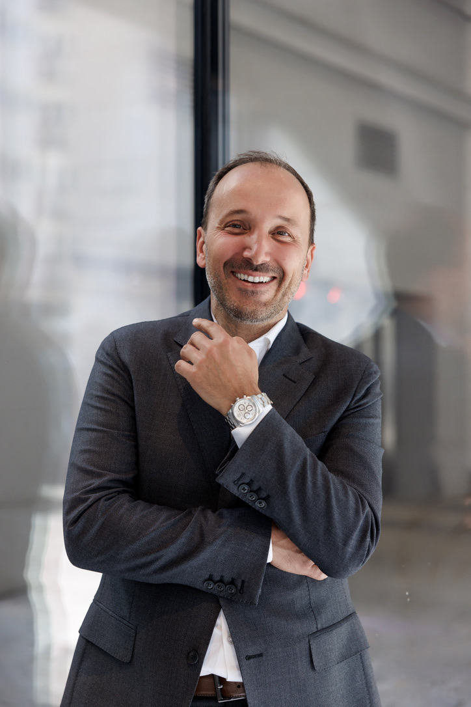

Стискаємо усі масштабні проблеми з мулом до компактного та безпечного гідровугілля.
Назавжди вирішуємо проблему утилізації осаду. Оптимізуємо бюджетні витрати (CapEx та OpEx) та створюємо комплексні інженерні рішення для громад, міст і підприємств.
Громада від 10 тис. мешканців або агропідприємство? Дізнайтесь, чи може ваш об'єкт стати ядром регіонального хабу →
Проблема
Традиційна утилізація мулу вмирає. Не метафорично. Фінансово та юридично.
Сушіння мулу з'їдає бюджет
94% очисних станцій Польщі не мають метантанків. Вони сушать мул на покупній енергії — газі або електриці. Сушіння потребує 1 200–1 300 Вт·год на кожен кілограм. Міста до 100 000 мешканців платять за кожен кіловат з бюджету.
Нікуди везти
У Польщі лише 11 інсинераторів для спалювання мулу на всю країну. Черги, залежність від однієї труби, ризик зупинки — це не гіпотетичний сценарій. Це поточна реальність для десятків муніципалітетів.
Директива ЄС закриває старі виходи
PFAS, мікропластик та важкі метали у традиційному мулі роблять його використання в сільському господарстві нелегальним. Нова UWWTD прийнята у грудні 2024. Відлік вже почався — перші дедлайни для великих станцій настають у 2033 році. Хто не підготується, заплатить штрафи.
Рішення
Знаходимо рішення, де виграє кожен — незалежно від розміру.
Оптимальність залежить від обсягу відходів. Великий водоканал або промислове підприємство отримує власну спеціалізовану станцію з повною автономією без залежності від сторонніх операторів. Малі громади та підприємства об'єднуються в регіональний кластер Hub & Spoke, де кілька учасників ділять одну інфраструктуру і разом досягають комерційно привабливого масштабу. В обох випадках ми знаходимо найкраще рішення.
Спеціалізована станція
Для великих муніципальних водоканалів та промислових підприємств зі стабільно високими обсягами ОСВ
Індивідуальний комплекс BioTC інтегрується безпосередньо в технологічну схему очисних споруд і забезпечує повну утилізацію відходів у точці їх виникнення.
- Повна утилізація відходів у точці виникнення
- Нульова залежність від сторонніх операторів
- Ліквідація витрат на транспортування мулу
- Гарантоване виконання екологічних KPI
Великі водоканали · Харчова промисловість · Хімічна · Целюлозно-паперова
Регіональний кластер Hub & Spoke
Для малих міст, громад та підприємств, де будівництво окремого HTC-заводу економічно неоптимальне
Кілька суміжних учасників об'єднують зусилля. Центральний Hub оснащений реактором BioTC — учасники Spoke здійснюють первинне зневоднення локально і транспортують мул до хабу.
- Розподіл фінансового навантаження між учасниками
- Комерційно привабливі обсяги гідровугілля та біогазу
- Одна екологічна сертифікація замість десятків
- Доступ до грантів ЄС до 90% CapEx
Малі громади · Невеликі водоканали · Агропідприємства · Місцевий бізнес
| Параметр | Спеціалізована | Кластер Hub & Spoke |
|---|---|---|
| Мінімальний обсяг ОСВ | Від ~50 000 м³/рік | Від ~10 000 м³/рік |
| Залежність від операторів | Нульова | Мінімальна |
| Доступ до грантів ЄС | До 75% | До 90% |
| Окупність | 3–4 роки | 3–3.5 роки |
| Масштабованість | Фіксована | Модульна |
| Екологічна сертифікація | Власна | Одна на кластер |
Не знаєте, який сценарій підходить?
Безкоштовна інженерна оцінка визначить оптимальну архітектуру під ваш обсяг ОСВ та бюджет — без зобов'язань.
Отримати оцінку →Розрахунки
Завантажте звіт вашого водоканалу. Отримайте попередні розрахунки за 60 секунд.
AI зчитає параметри з вашого лабораторного документа та розрахує потенціал об'єкта: вихід ековугілля, енергобаланс, клас хабу.
PDF, Excel або скан лабораторного звіту — AI зчитає все
Докази
Технологія підтверджена комерційно, науково та індустріально.
Перша комерційна угода
Жовтень 2025. Муніципальне підприємство MPWiK Lubin офіційно викупило авторські права на концепцію TH-AD-HTC від BTC Consulting для модернізації очисних споруд — не пілотний проєкт, а повноцінна комерційна угода з муніципалітетом.
Академічна верифікація
Дослідження ведуться разом із кафедрою теплоенергетики AGH Kraków. Dr hab. inż. Małgorzata Wilk входить до TOP 2% вчених світу за версією Stanford University. Фізика процесу підтверджена міжнародною базою WikiChar Hydrochar Network.
Публічний генпідрядник
Всі монтажні роботи та пусконалагодження виконує INTROL Group S.A. — холдинг, що котирується на Варшавській фондовій біржі. Не безіменний субпідрядник, а публічна корпоративна відповідальність.
Команда
Люди, які несуть персональну відповідальність за кожен проєкт.

Dr inż. Eugeniusz Krop
Технічний директор28 масштабних промислових впроваджень. Серед клієнтів — ORLEN. Якщо технологія не працює в полі — він знає чому і як виправити.

Dr hab. inż. Małgorzata Wilk
R&D та наукова верифікаціяЗавідувачка кафедри AGH Kraków. TOP 2% вчених світу (Stanford, 2024). Кожна цифра на цьому сайті пройшла через її лабораторію.

Andrzej Krop
Управління проєктамиЕкс-CEO європейського підрозділу японської корпорації. Гарантує, що проєкт завершується у строк та бюджет — не на папері, а в реальності.

Max Koval
Міжнародний маркетингСтворює ринки там, де вчора бачили відходи. B2B-стратегія та circular economy позиціонування BioTC на ринках ЄС.
Фінансування
До 75% вартості хабу — не з міського бюджету. До 95% — на підготовчу технічну документацію.
Страх великих капітальних витрат — головна причина, чому муніципалітети відкладають рішення. Ми усуваємо цей страх конкретними інструментами.
Програма EU LIFE
Цільова грантова програма ЄС для екологічних інфраструктурних проєктів. Покриває до 90% CapEx на пілотні об'єкти. Ми знаємо критерії відбору — і проєктуємо хаби так, щоб під них підпадати.
Академічне лобіювання через AGH
Партнерство з університетом — це офіційний канал для подачі заявок на дослідницькі та інфраструктурні гранти ЄС, недоступні комерційним компаніям напряму.
Грантова документація під ключ
Розробка повного пакету грантової документації входить у вартість інженерного проєкту. Ви не шукаєте юристів та консультантів окремо.
Контакт
Перший крок — безкоштовна інженерна оцінка об'єкта.
Надішліть заявку. Наші інженери проаналізують вхідні дані та протягом 30-хвилинного дзвінка розкажуть: який сценарій оптимальний для вашого об'єкта — монозадачна станція або кластер Hub & Spoke — та яке грантове фінансування доступне.